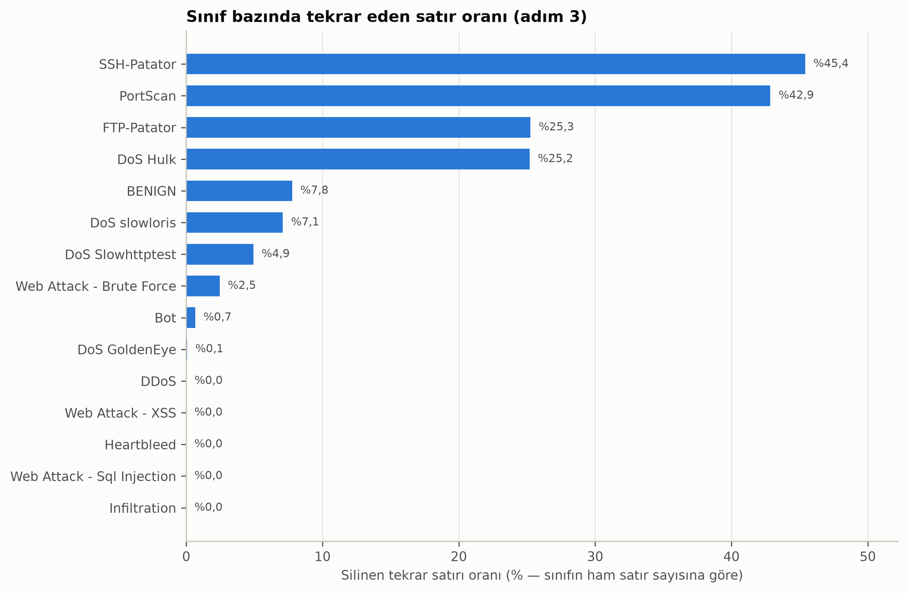

Yüksek lisans bitirme projesi
FlowGuard ilerleme panosu
Makine Öğrenmesi Tabanlı Ağ Trafiği Analizi ve Siber Tehdit Tespit Sistemi
Odak: Genel doğruluk yerine yanlış alarm oranı (FPR), saldırı türü bazında tespit oranı ve sınıf dengesizliği
Veri inceleme ve temizlik tamamlandı; ortak veri modülü hazır ve doğrulandı; literatür taraması sürüyor (4 temel kaynak incelendi).
Danışman görüşü beklenen konular
4 konuda görüşünüz bekleniyor.
-
Nadir sınıflar için raporlama düzeni
Heartbleed (11), SQL Injection (21) ve Infiltration (36) satırla çok küçük; tek bir %80/%20 bölmede test kümesine 3-8 satır düşüyor. Öneri üç katman: (1) ikili sınıflandırma (normal/saldırı) ana deney, (2) saldırı ailesi bazında sınıflandırma, (3) 15 sınıf yalnızca tekrarlı katmanlı çapraz doğrulama ile ve örnek sayılarıyla birlikte.
Soru Bu üç katmanlı düzen uygun mu?
-
Çelişkili etiketli satırların silinmesi
Özellikleri birebir aynı ama etiketi farklı 698 akış çifti (1.396 satır, verinin %0,055'i) var; hepsi normal trafik ile saldırı arasında, çoğu PortScan. Bu satırlar siliniyor; etkisi bir duyarlılık analiziyle ayrıca ölçülecek.
Soru Silme + duyarlılık analizi yaklaşımı yeterli mi?
-
Kapsam önceliği
UNSW-NB15 ile çapraz veri seti testi planda, ancak iki veri setinin özellikleri birebir eşleşmiyor. Takvim sıkışırsa ilk ertelenecek iş bu.
Soru Çapraz veri seti testi sizce zorunlu mu, yoksa ek katkı olarak mı değerlendirilmeli?
-
Teslim ve biçim
Rapor için yazım kılavuzu, sayfa sınırı, teslim ve sunum tarihleri henüz bende yok.
Soru Uymam gereken bir kılavuz, sayfa sınırı ya da yapay zeka kullanım beyanı kuralı var mı?
Son güncellemeden bu yana
- 2. haftanın ilk işi erken tamamlandı: temizlik adımları tek bir ortak veri modülünde toplandı ve tüm sayılar bağımsız bir kontrol betiğiyle doğrulandı (temizlik sonrası 2.520.859 akış, 65 özellik).
- Literatür tarama protokolü hazırlandı (5 eksen, arama ifadeleri, dahil etme ve dışlama ölçütleri).
- 11 kaynağın künyesi birincil kaynaklardan doğrulandı; 4 temel kaynak tam metinden incelendi.
- Veri incelemesindeki gözlemlerin çoğu (bayrak sütunları, yük taşımayan web saldırısı akışları, kısayol özellikleri) literatürde belgelenmiş özellik çıkarım hatalarıyla eşleşti.
- Çapraz veri seti testi için CICFlowMeter ile işlenmiş UNSW-NB15 sürümü seçildi.
Sayılarla ilerleme
Öne çıkan bulgu
Tekrar eden akışlar sınıflara eşit dağılmıyor

SSH-Patator akışlarının %45'i, PortScan akışlarının %43'ü birebir tekrar. Tekrarlar silinmeden yapılan bir değerlendirmede aynı akış hem eğitimde hem testte bulunabileceği için, en çok bu saldırı türlerinin sonuçları olduğundan iyi görünür.
5 haftalık plan
-
Hafta 125–31 EkimOrtam, veri inceleme, keşifsel veri analizi (EDA), literatür taramasının başlangıcıDevam ediyor
-
Hafta 21–7 KasımÖn işleme hattı (Pipeline), sınıf dengesizliği stratejileri, model eğitimiBekliyor
-
Hafta 38–14 KasımModel karşılaştırması, saldırı türü bazında metrikler, çapraz veri seti testiBekliyor
-
Hafta 415–21 KasımStreamlit arayüzüBekliyor
-
Hafta 522–30 KasımProje raporunun tamamlanması, sunumBekliyor
Karar kaydı
| Tarih | Karar | Gerekçe |
|---|---|---|
| 25.10.2026 | Ana sistem bir iş akışı uygulaması olmayacak; n8n yalnızca zaman kalırsa sonda isteğe bağlı bildirim eklentisi olabilir. | Model eğitimi için uygun değil; bulut tabanlı çalışması tekrarlanabilirlik ve veri gizliliği açısından sorunlu. |
| 25.10.2026 | Tekrarlar, kaynak dosyadan bağımsız tanımla ve eğitim/test bölmesinden önce silinir (308.381 satır). | Aynı akışın farklı günlerde görünen kopyalarının hem eğitimde hem testte kalması önlenir. |
| 25.10.2026 | Özellikleri aynı, etiketi farklı 1.396 satır silinir; etkisi duyarlılık analiziyle ölçülecek. | Aynı özellik vektörünün eğitim ve testte farklı etiketle görünmesi önlenir. |
| 25.10.2026 | Satır silme ve değer düzeltme kuralları etiketten bağımsızdır; etiket dağılımına yalnızca etkiyi raporlamak için bakılır. | Etikete bakılarak seçilen kurallar sonuçlarda yanlılık yaratır. |
| 25.10.2026 | Eksik değer doldurma, ölçekleme ve dengeleme (SMOTE) yalnızca eğitim verisinden öğrenilir. | Veri sızıntısını (data leakage) önlemek. |
| 25.10.2026 | Sabit 8 sütun ve tüm satırlarda birebir eşit 5 kopya sütun düşürülür; 78 özellikten 65'i kalır. | Yeni bilgi taşımazlar. Kopyalar 69 özelliğin tüm çiftleri taranarak bulundu; her grupta ilk sütun tutulur. Neredeyse eşit çiftlere dokunulmaz; o karar eğitim verisinden yapılacak özellik seçimine bırakıldı. |
| 25.10.2026 | Saldırı aileleri için literatürdeki 7 sınıflı şema (Panigrahi ve Borah, 2018) benimsendi; Heartbleed DoS/DDoS ailesinde. | Aile bazlı sonuçlar kendi geçici şemamıza değil yayımlanmış bir sınıflandırmaya dayanır; böylece literatürle karşılaştırılabilir. |
| 25.10.2026 | Çapraz veri seti testi için CIC-UNSW-NB15 (UNSW-NB15'in CICFlowMeter ile işlenmiş sürümü) kullanılacak; yalnızca ikili sınıflandırma, ortak özellik alt kümesiyle. | Ana veri setiyle aynı özellik çıkarım aracından üretildiği için iki veri setinin özellikleri eşleştirilebilir; NetFlow tabanlı sürümler CIC-IDS2017'yi kapsamıyor. |
| 25.10.2026 | Kapsam bitirme projesi düzeyinde tutulacak; literatür hedefi 20 kaynak. | Ödev metninde kaynak sayısı şartı yok; çekirdek iş (temizlik, sızıntısız değerlendirme, 4 model, yanlış alarm oranı ve saldırı türü bazında başarı, arayüz, rapor) önceliklendirildi. |